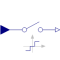
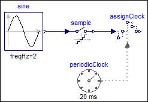

SampleWithADeffectsSample with (simulated) Analog-Digital converter effects including noise |

|
Diagram
{kind=link}
Information
This information is part of the Modelica Standard Library maintained by the Modelica Association.
This block is similar to the Sample block. The only difference is that after the sampling of the input signal, simulated real-world effects are applied on the sampled signal. In particular:
- The output is limited, if parameter limited = true.
- The output is value discretized in the form of an Analog-Digital converter with a definable number of bits, if parameters limited = true, and quantized = true.
- Noise is added to the output if parameter noisy = true. A pseudo random number generator is used to generate uniformly distributed random numbers in a given band.
Example
The following example samples a sine signal with a periodic clock of 20 ms period, and adds the following effects:
- Limits the output to +/- 0.8.
- Discretizes the output with an 8 bit AD converter.
- Adds large uniform noise with a band of +/- 0.2.
|  |
 |
|
| model | simulation result |
The output y is quite far away from the continuous-time input signal,
due to the strong discretization and large noise applied to the
sampled input.
Parameters (6)
| noisy |
Value: false Type: Boolean Description: = true, if output should be superimposed with noise |
|---|---|
| limited |
Value: false Type: Boolean Description: = true, if output is limited |
| quantized |
Value: false Type: Boolean Description: = true, if output quantization effects included |
| yMax |
Value: 1 Type: Real Description: Upper limit of output (if limited = true) |
| yMin |
Value: -yMax Type: Real Description: Lower limit of output (if limited = true) |
| bits |
Value: 8 Type: Integer Description: Number of bits of quantization (if quantized = true) |
Connectors (2)
| u |
Type: RealInput Description: Connector of continuous-time, Real input signal |
|
|---|---|---|
| y |
Type: RealOutput Description: Connector of clocked, Real output signal |
Components (4)
| sample1 |
Type: Sample |
|
|---|---|---|
| noise |
Type: UniformNoise Description: Noise model |
|
| limiter |
Type: Limiter |
|
| quantization |
Type: Quantization |
Used in Examples (2)
|
Modelica.Clocked.Examples.SimpleControlledDrive Simple controlled drive with discrete controller and simulated AD and DA effects |
|
|
Modelica.Clocked.Examples.Elementary.RealSignals Example of a SampleWithADeffects block for Real signals |